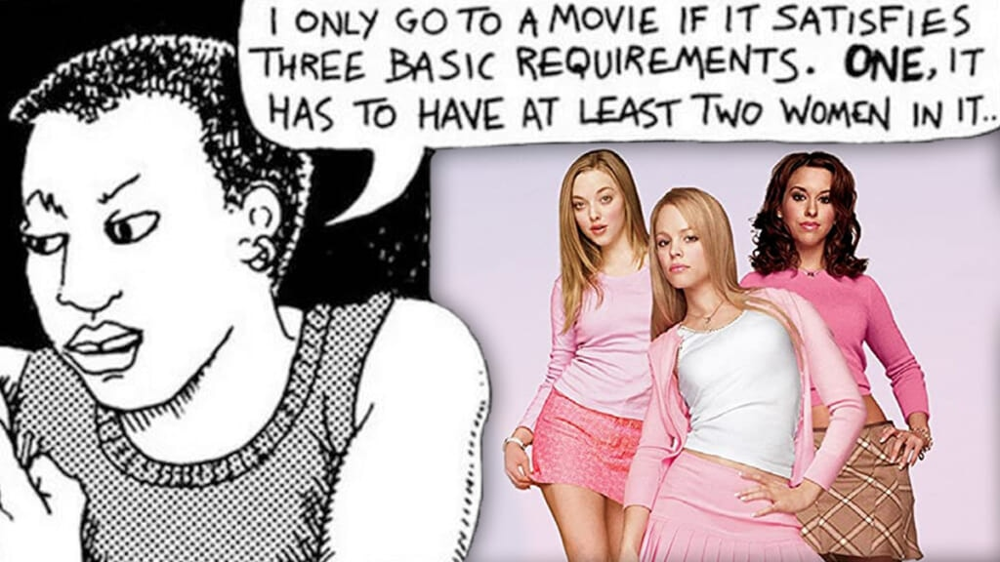
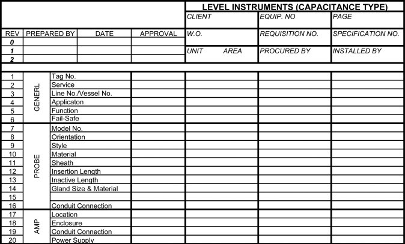
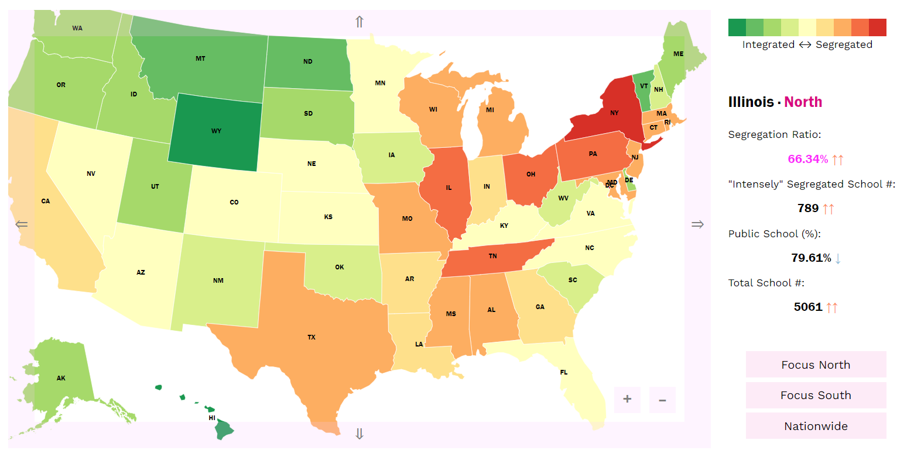
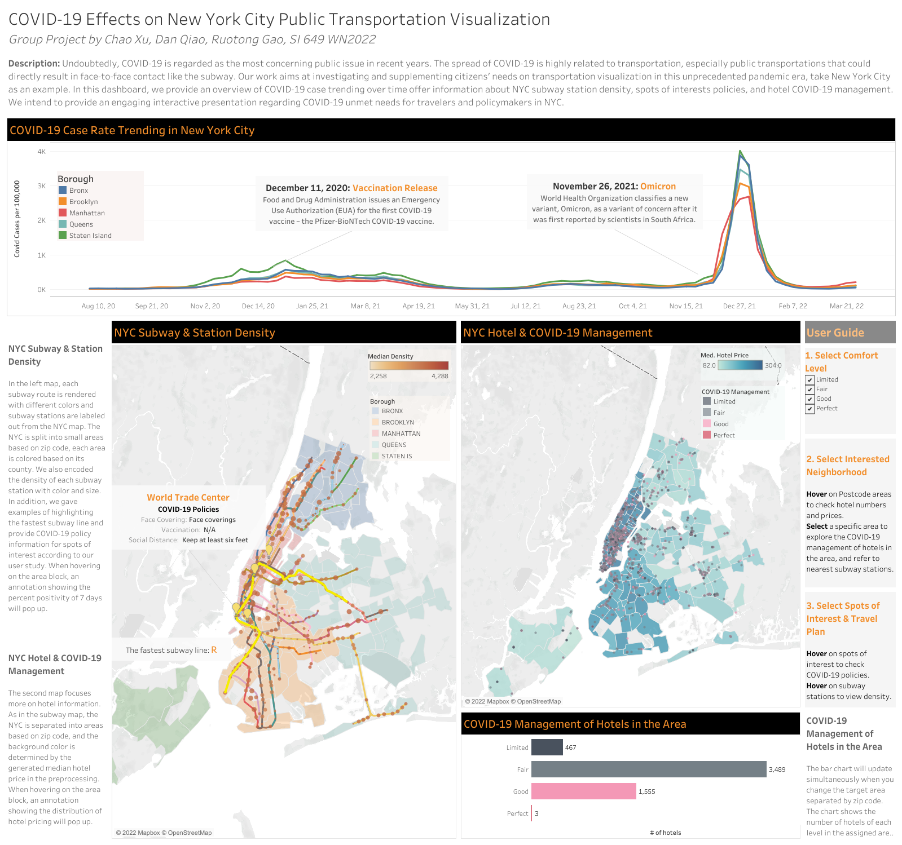
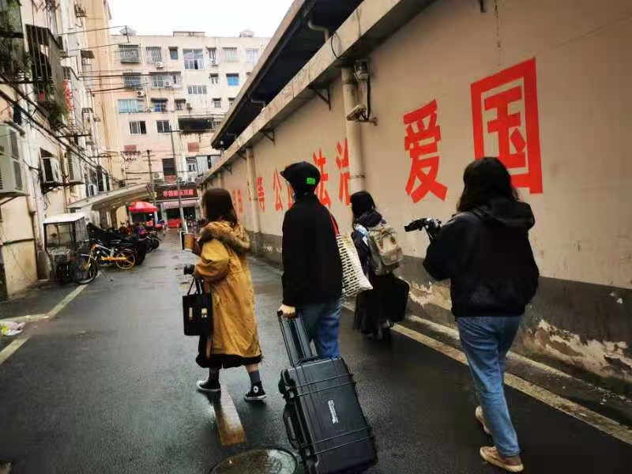

C'mon. Let's go.
Algorithm Auditing: Exploring Datasets
Gender Discrimination in Datasets: A Case Study of the MovieLens Dataset
This project, in response to the calls for transparency and algorithmic equity, aims at examining gender-based stereotypes and discrimination in broadly spread public datasets. I use MovieLens 25M dataset created by GroupLens as an example and Bechdel test samples as an auxiliary dataset. I focus especially on gender equity and stereotypes in this dataset, and propose prospective outcomes of using a biased dataset for algorithm training.
Click here to view the project: Gender Discrimination in Datasets

Datasheet for Dataset: DAIC-WOZ Dataset
Inspired by Datasheets for Datasets (Gebru et al., 2021), I created a datasheet for DAIC-WOZ dataset, which is broadly used in detection of psychological distress conditions. I'm particularly aiming to clarify potential biases in the data gathering/processing phase of the dataset.
Click here to view the datasheet: Datasheet: DAIC-WOZ Depression Database

Information Visualization: Social Justice / Transportation
School Segregation: A Comparative Study
The visualizations are inspired by Nikole Hannah-Jones's article published on the New York Times on June 9, 2016: Choosing a School for My Daughter in a Segregated City. 157 years after the civil war and 68 years after the Supreme Court's landmark Brown v. Board of Education ruling, the segregation in U.S. education systems remains a problem. It also helps illustrate school segregation in the U.S., and its counterpart in China - based on longstanding residential segregation.
Click here to view the project: School Segregation

COVID-19 Effects on New York City Public Transportation
Undoubtedly, COVID-19 is regarded as the most concerning public issue in recent years. The spread of COVID-19 is highly related to transportation, especially public transportations that could directly result in face-to-face contact like the subway. Our work aims at investigating and supplementing citizens’ needs on transportation visualization in this unprecedented pandemic era, take New York City as an example.
Click here to view the project: COVID-19 Effects on New York City Public Transportation Visualization

Evaluation on Elevator Controls for the Visually Impaired
Worked with Fujitec Elevator (Group) Co., we tested elevator controls with the visually impaired and conducted field research with them to raise public awareness of disability justice. We also held an accessible online exhibition of stories, calls, and manifestos from people with visual impairments. In addition, we conducted an eye tracking experiment with people who have vision to evaluate the usability of the elevator controls.
Click here to view the documentary: Documentary: Zhu's Movie
